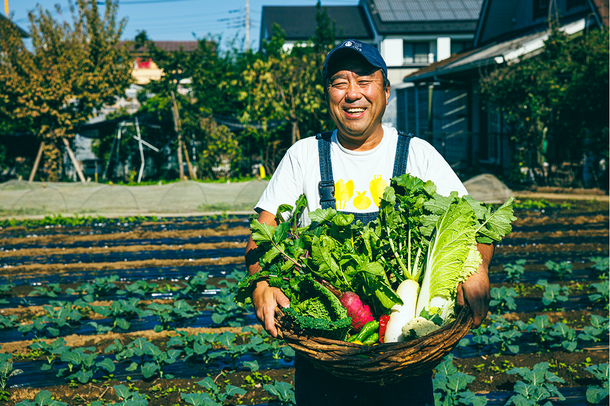
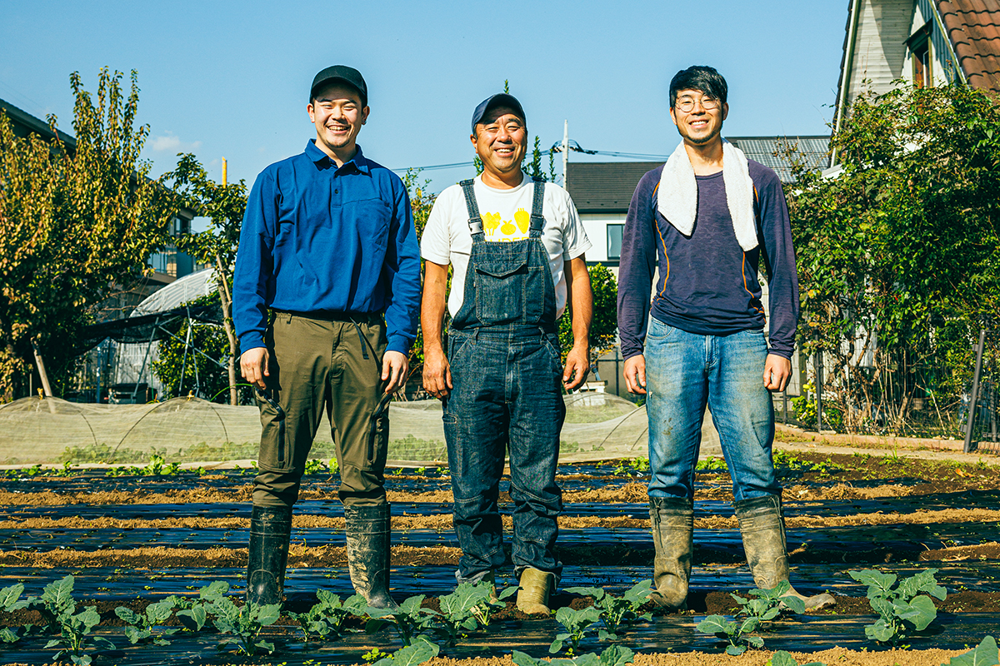
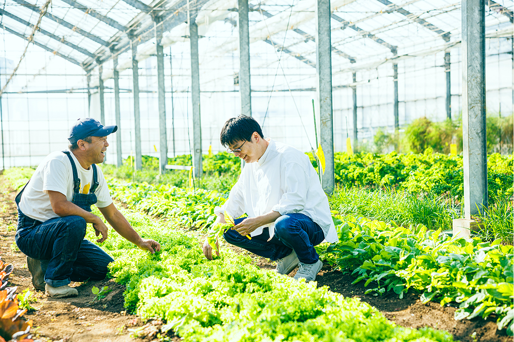
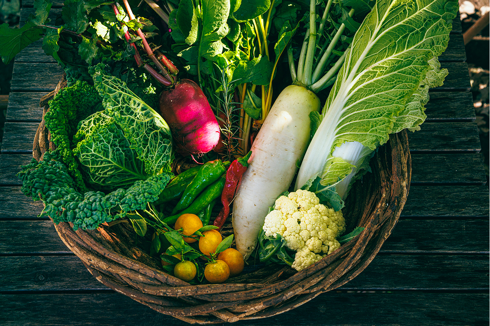
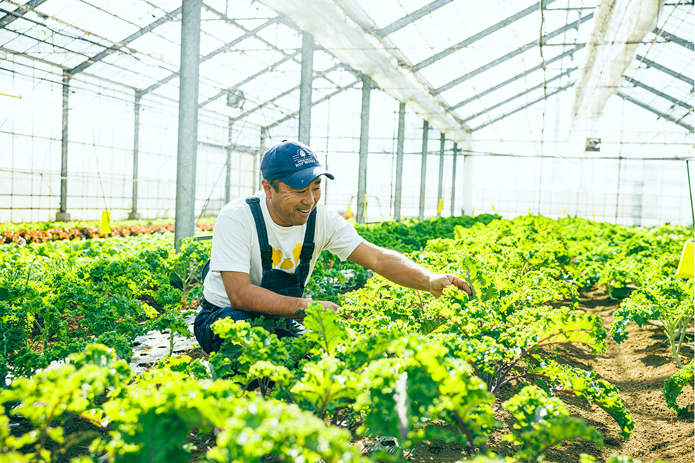
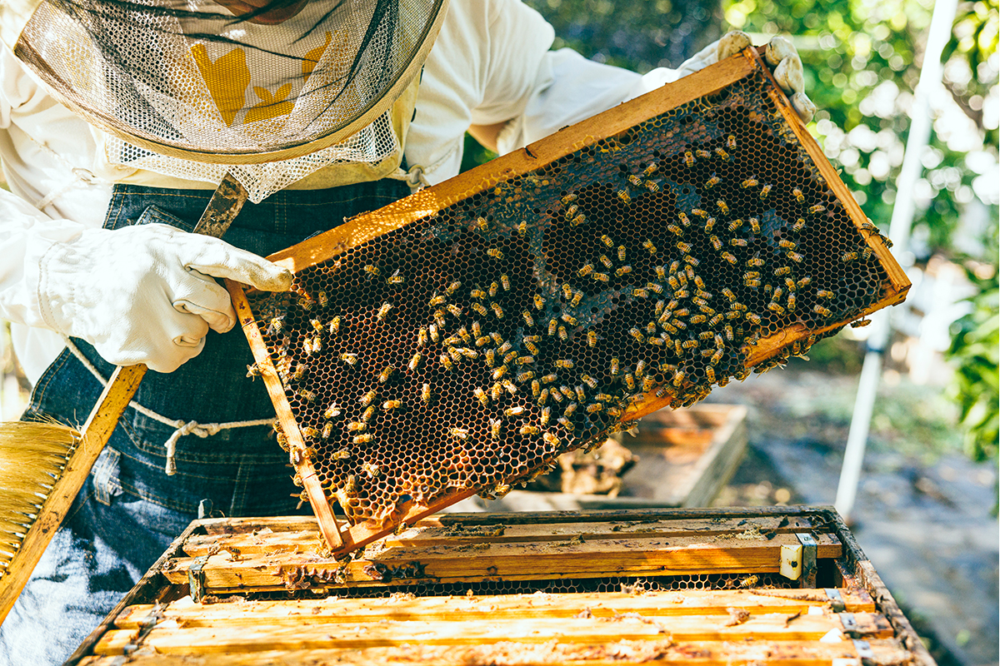
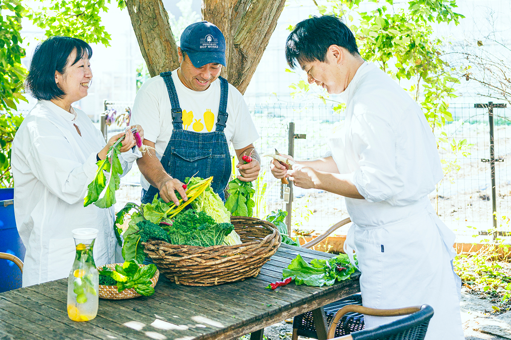
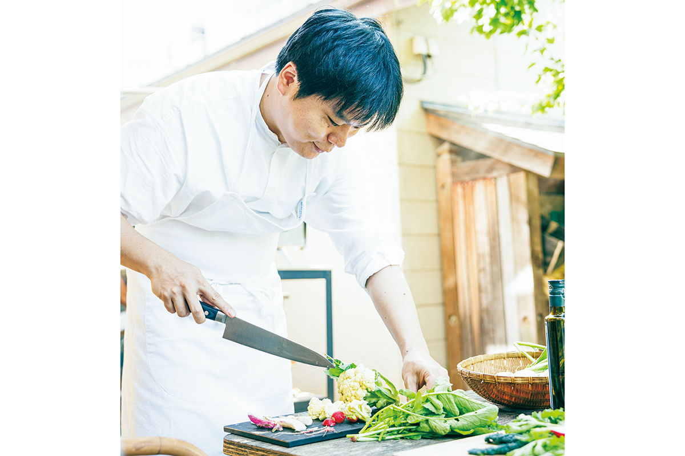
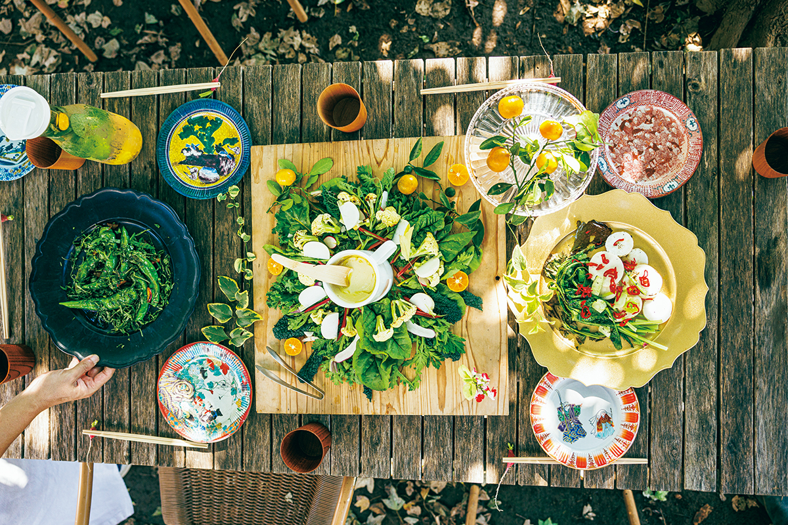
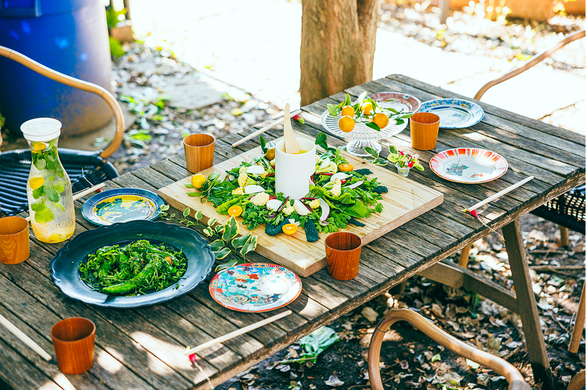

Префектура Сайтама · Сока · ферма
Chavipelto: органическая ферма среди жилых кварталов Сока

В восьми минутах ходьбы от станции Сока, между жилыми домами, вдруг открывается поле, будто из книжки с картинками. Здесь выращивают органические овощи, продают их в собственной лавке и кормят соседей обедом.
Ферма
Поле, которое видно только сверху
Сока стоит на юго-востоке префектуры Сайтама, сразу за границей Токио, и сплошь застроен жилыми домами. Если посмотреть на этот квартал на спутниковой карте, легко удивиться: откуда здесь поле? Ферма Chavipelto занимает участок среди домов, и пройти к ней от станции можно пешком.
Необычное название сложено из трёх слов. Chatty по-английски значит «болтливый», vihannes по-фински «овощ», а pelto «поле». Получается «поле болтливых овощей».

Ферму с сертификатом органического земледелия JAS ведёт семейная пара. Здесь работает много людей: одни ухаживают за полем, другие стоят за прилавком лавки и в отделе готовой еды при ней.
«Я родился в семье, которая занимается землёй уже несколько поколений, я пятый. Раньше мы растили лук сэндзю-нэги, потом в основном комацуну. Но мне хотелось продавать овощи людям, которые живут рядом, напрямую. Поэтому мы перешли на органику и открыли свою лавку»
хозяин фермы

В лавке лежат овощи, только что снятые с этого поля, а ещё здесь продают готовые блюда из них, и они пользуются славой у соседей. В обед в лавке людно: приходят жители окрестных домов.
Город
Зачем городу поле

Сельское хозяйство на землях внутри городской застройки и рядом с ней в Японии называют городским. Когда-то поля встречались и в жилых кварталах, но со временем почти исчезли.
Первый перелом случился в 1968 году, когда приняли новый закон о городском планировании: городскую пашню стало можно пустить под застройку, просто подав уведомление. В годы экономического пузыря жилые кварталы росли ещё быстрее. С 1991 года городские поля стали облагать налогом на имущество как участки под жильё, а отсрочка налога на наследство на них больше не действовала, и полей стало ещё меньше.
Со временем отношение изменилось. Оказалось, что городская ферма не только снабжает город свежими овощами, но и даёт место, где можно попробовать себя в сельском труде и встретиться с соседями, а при стихийном бедствии становится открытым безопасным пространством. В 2015 году в Японии вступил в силу закон о развитии городского сельского хозяйства: поля рядом с домами решили беречь. Но исчезнувшая пашня обратно не возвращается, поэтому такие фермы, как Chavipelto, большая редкость.

«Кале сейчас в моде. Попробуйте прямо с грядки»
хозяин фермы
Кале обычно кажется жёсткой: для салата её даже принято тонко шинковать. Здешняя кале мягкая, и во рту остаётся сладость, свойственная капустным. Секрет в удобрении: растительный компост, причём только немного жмыха от рапсового масла. Тогда, по словам хозяина, и текстура, и вкус становятся мягче.
Пчёлы
Без пестицидов, ради пчёл
«Животные удобрения дают сильный, напористый вкус. Мы стараемся, чтобы у овощей не было горечи и они легко ложились на организм»
хозяин фермы
Тело человека строится из того, что он ест, а овощ строится из почвы. Вкус блюда начинается задолго до кухни.
Поле не назовёшь большим, но на нём растёт множество разных овощей. В углу выращивают травы, есть плодовые деревья: райские яблочки и Valencia Little Lemon, маленький лимон с оранжевой мякотью. Под деревьями стоят ульи.

«Пестициды мы не используем ещё и ради пчёл. Они помогают с опылением, и урожай плодовых культур вырос примерно втрое»
хозяин фермы
Пчёлы помогают ферме и дают мёд. Его вкус зависит от времени года: летний мёд лёгкий и не слишком сладкий, а зимний густой и насыщенный.
Кухня
Склад продуктов для всего района
Автор очерка, писатель и повар, бывает на Chavipelto с 2018 года. Он арендует в углу фермы небольшую грядку и по выходным возится в земле с друзьями. О сортах и о том, как их растить, он многое узнал от хозяина.

«Городская ферма и ферма в пригороде нужны для разного. Мы не подгоняем овощи под размер коробки для отправки. Мы растим их, думая с самого начала, кто будет их готовить. Тогда нас и воспринимают как кладовую района»
хозяин фермы
Любой повар хочет готовить из свежих овощей, собранных рядом с рестораном. Прежде всего потому, что это вкуснее: от сочных, только что сорванных овощей исходит жизненная сила. За годы, что автор очерка ездит на ферму, многое изменилось. Кроме органических супермаркетов и собственной лавки, у Chavipelto стало больше заказов от ресторанов.

«Многие овощи последних лет мы начали растить по просьбе ресторанов. Итальянский длинный кабачок кукуцца появился так: шеф, с которым мы работаем, дал семена и сказал: вырасти-ка. Растим и особые отбелённые овощи, вроде тардиво и кастельфранко. Примерно с 2020 года, после начала пандемии коронавируса, повара стали думать иначе. Раньше они просили: под такое блюдо нужен такой овощ. Теперь они придумывают блюдо под овощ. Шефы приезжают на поле и находят применение тому, что мы раньше выбрасывали. Наверное, помогло то, что, пока рестораны стояли закрытыми, у них было время подумать»
хозяин фермы
Например, корнеплод репы идёт гарниром к главному блюду, листья в пасту, а кожура в бульон. Ферма знает, что нужно поварам, и отправляет именно те овощи, что поспели к этому времени. Вкус передаётся по цепочке от поля к повару и от повара к столу, и чем больше люди говорят друг с другом, тем он богаче.

«В магазинах часто просят овощи, которым сейчас не сезон. А когда отправляешь знакомым шефам то, что выросло, поле не надрывается, и, зная их вкусы, можно что-то придумать. Работать становится легче, и появляются силы расширить поле или посадить что-то новое»
хозяин фермы
Соседи
Поле, где все разговаривают
На Chavipelto приезжают не только повара. Приходят дети из соседнего детского сада с родителями, заглядывают сотрудники местной администрации: в Японии стали считать, что поле в квартале полезно и для самого города.

Друзья нередко собираются за столом прямо на краю поля. Если открыть японский словарь на слове «органический», там сказано, что это множество частей, тесно связанных в одно целое. Вкус рождают связи между людьми, и на поле болтливых овощей разговор не стихает.
Что растёт в какое время года (по данным фермы на 2025 год)
- Зима: дайкон, цветная капуста, пекинская капуста, хризантема сюнгику, романеско, таро яцугасира, кале, мангольд.
- Весна: молодой лук, стручковый горох кинусая, сахарный горошек снэп, ругола, репа, комацуна, спаржа.
- Лето: сладкий перец, томаты, баклажаны, горькая тыква гоя, мулухия, малабарский шпинат, водяной шпинат.
- Осень: репа, дайкон, цветная капуста, кале, шпинат, кинза, мангольд, капуста каволо неро.
Летом 2025 года в лавке случился пожар, и она временно закрывалась, а обеды на какое-то время приостановили. Перед поездкой стоит уточнить на сайте или по телефону, открыта ли лавка. На 2025 год ферма планировала с весны принимать гостей на сбор урожая.
Chavipelto
- Адрес
- префектура Сайтама, Сока, Хикава-тё, 2138-3
- Телефон
- +81 48-951-7083
- Часы работы
- 11:00–20:00
- Выходные
- воскресенье, понедельник
- Как добраться
- 8 минут пешком от станции Сока
- Сайт
- chavipelto.co.jp
Фото: Симпэй Фукадзава.